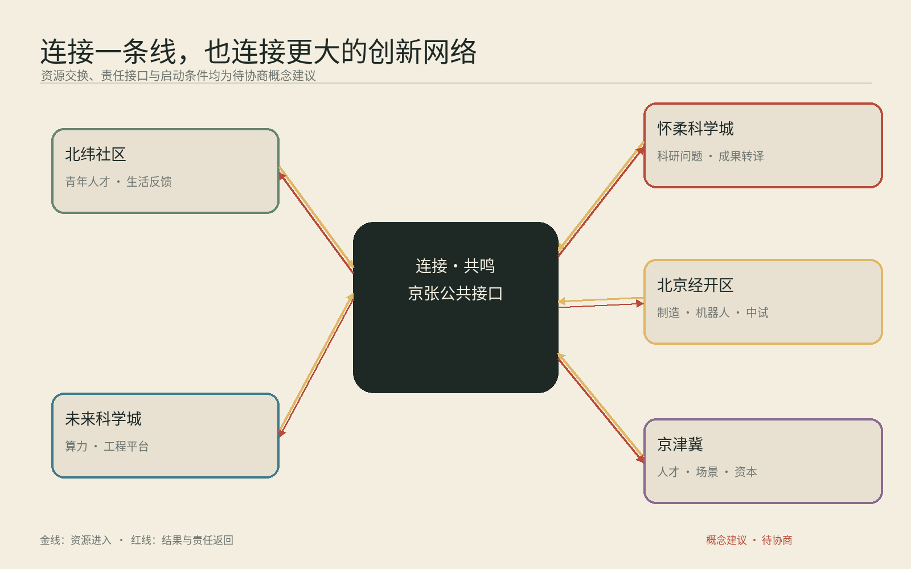

百年京张AI创新带城市设计
沿着百年京张，连接历史与未来，连接知识与生活，也连接一个具体的人和另一个具体的人。
图中范围来自仓库临时粗略边界。它支撑概念设计和临时复算，正式红线到位后全包更新。
全栈自主创新体系与AI治理全球话语权
世界级AI创新生态
智能原生新业态进入城市生活
全球要素配置、中关村IP与资本赋能
AI场景赋能与智能化AI活力城市
公共服务 · 人工在场 · 可退出
受控测试 · 人工复核 · 可暂停
受控测试 · 人工复核 · 可暂停
公共服务 · 人工在场 · 可退出
受控测试 · 人工复核 · 可暂停
公共服务 · 人工在场 · 可退出
公共服务 · 人工在场 · 可退出
公共服务 · 人工在场 · 可退出
公共服务 · 人工在场 · 可退出
公共服务 · 人工在场 · 可退出
公共服务 · 人工在场 · 可退出
公共服务 · 人工在场 · 可退出
这些数值由同一组GeoJSON在EPSG:4548下复算，置信度随临时边界保持为低。控规、权属、现状建筑、市政和文保条件仍待正式资料补齐。
合成声音，仅作概念表达；没有使用历史录音。
铁路记忆、清华园车站叙事、多语文化漫步
六间城市客厅、十二个日常场景、小月河翼
六种资源循环、三处重点区、中关村翼
名称、两线一弧Logo方向、三大定位、五大功能、三区两翼
八案例、六资源循环、众智园与原点社区
12场景、3项验证、6类人物、人工复核
3处地标、贡献铭牌、6件公共组件
京张、中关村与AI新文化；双语导视
京张连接季、开发者社区、场景开放与转化

北纬社区交换青年人才与生活反馈；未来科学城交换算力和工程平台；怀柔科学城交换科研问题和成果转译；北京经开区连接制造与中试；京津冀共同发布年度开放题。所有关系均为待协商概念建议。
砖红连接线、金色共鸣线与回声弧。
自愿署名或匿名，可申请撤回。
春季问路、夏季同桌、秋季试行、冬季回声。